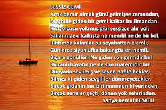

SESSİZ GEMİ
Artık demir almak günü gelmişse zamandan
Meçhule giden bir gemi kalkar bu limandan.
Hiç yolcusu yokmuş gibi sessizce alır yol;
Sallanmaz o kalkışta ne mendil, ne de bir kol.
Rıhtımda kalanlar bu seyahatten elemli,
Günlerce siyah ufka bakar gözleri nemli,
Biçare gönüller! Ne giden son gemidir bu!
Hicranlı hayatın ne de son matemidir bu.
Dünyada sevilmiş ve seven nafile bekler;
Bilmez ki giden sevgililer dönmeyecekler.
Bir çok gidenin her biri memnun ki yerinden,
Bir çok seneler geçti; dönen yok seferinden.

Sessiz Gemi => Tikla